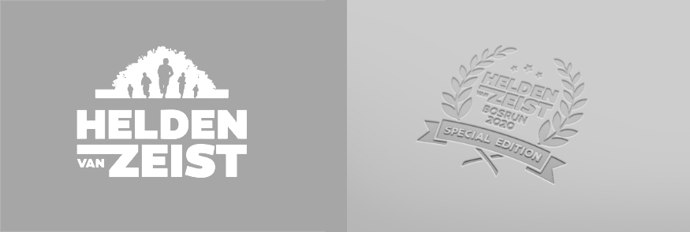

2019 / 2020
De Helden van Zeist Bosrun
Grafisch Design, vrijwilligerswerk

Ontwerp A3 Poster
Allereerst maakte ik een ontwerp voor een A3 poster, om publiek te werven. Mensen tot actie aan te zetten. De opdrachtgever gaf mij hiervoor een aantal content en stijl elementen, maar verder had ik veel vrijheid. De poster moest het volgende uitstralen: groen, duurzaam, voor het goede doel, kleinschalig/laagdrempelig. Tijdens het ontwerpproces vroeg ik regelmatig feedback aan de opdrachtgever.
Originele logo van de Helden van Zeist (links) en het door mij ontworpen jubileumlogo (rechts)
Naast de poster kreeg ik de opdracht om van het huidige logo een jubileumlogo te maken. Dit logo werd op houten medailles bedrukt. Elke loper ontving een medaille bij de finish.
Jubileumlogo opdruk op houten medailles
Vervolgens deed ik een aantal voorstellen voor een jubileumshirt. Om de drukkosten van het shirt te beperken is er uiteindelijk toch voor gekozen om de shirts te bedrukken met het jubileumlogo.
Shirt ontwerp variaties
Shirt ontwerp met jubileumlogo
Naast het design-gedeelte dat er aan vooraf gaat ben ik op de dag zelf aanwezig als foto- en/of videograaf. Ik maak onder andere groepsfoto’s en een aftermovie.
Foto's van tijdens het evenement
Benieuwd naar de aftermovie van de vorige editie? Die staat op YouTube! Check hem hier:


© 2020 Raven Lakerveld